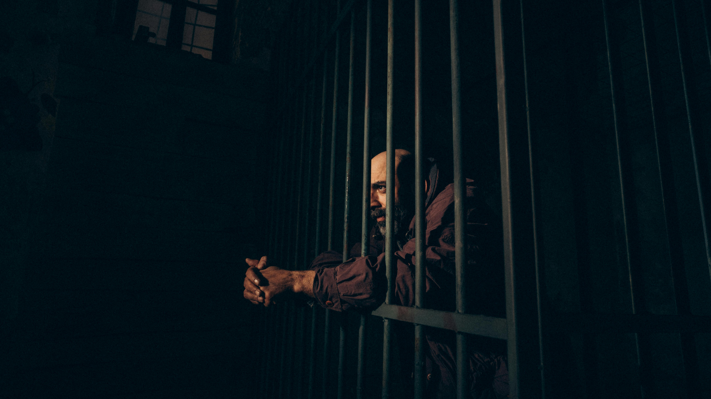

A Tornozeleira
e o Animal
Em que o mais forte dos homens
é apanhado no único momento em que é fraco
"Os homens devem ser mimados ou eliminados, porque se vingam de ofensas leves, mas não podem vingar-se das graves. A ofensa que se faz a um homem deve ser tão grande que se não tema a sua vingança."
Nicolau Maquiavel — O Príncipe, Capítulo III
A tornozeleira eletrônica chegou antes da doença. Era um dispositivo pequeno, cor de chumbo, que o General Rodrigo Veras havia aceitado usar com aquela dignidade silenciosa dos que sabem que recusar seria pior — não para eles, mas para o símbolo que carregavam sem ter pedido para carregar. Havia colocado no tornozelo direito, diante de câmeras, sem curvar o pescoço. Quem o conhecia sabia que aquele era o gesto mais custoso da sua vida pública: não a derrota nas urnas, não os inquéritos, não os anos de perseguição judicial — mas aquele movimento específico de abaixar o corpo para receber um grilhão e fazer isso sem que o rosto mostrasse o que o peito sentia.
A doença veio três semanas depois, sorrateira como as doenças que encontram um homem que nunca adoeceu e por isso não sabe reconhecer os próprios sinais de colapso. Veras havia passado cinquenta e quatro anos tratando o corpo como instrumento de trabalho: dormia pouco, comia irregularmente, bebia água insuficiente. O médico da família havia dito, em três consultas nos últimos dois anos, que aquele ritmo tinha um prazo. Veras havia ouvido com a atenção de quem registra e não altera.
O que chegou não era grave, a princípio. Uma infecção. Febre. A medicação prescrita era padrão para o quadro — analgésico, anti-inflamatório, um antibiótico de amplo espectro e, para a insônia que acompanhava a febre, um sedativo leve que o médico apresentou com a frase que os médicos usam quando querem que o paciente não leia a bula com atenção: "só para ajudar o descanso."
O sedativo leve, em interação com o antibiótico e com a desidratação que o General ignorava ter, produziu o que a medicina chama de estado confusional agudo.
Veras viu o animal na segunda noite.
Lívia Veras estava no Estado do Norte quando o guarda bateu na porta. Havia viajado quatro dias antes — não por vontade própria, ou não inteiramente. O Conselheiro Cardoso havia telefonado na semana anterior com um pedido apresentado como urgência partidária: uma série de eventos regionais, reuniões com lideranças locais do Movimento que precisavam de uma figura de autoridade. Lívia era — todos sabiam — a figura mais capaz de unir onde outros dividiam.
Era um elogio verdadeiro. Isso tornava o pedido mais difícil de recusar.
Ela havia hesitado. Rodrigo estava com febre — baixa, dissera o médico, controlável. A medicação estava prescrita, o guarda estava na porta, a casa estava segura. Quatro dias. Mas a camada abaixo do que Cardoso dizia era sempre algo de errado, e ela havia aprendido a normalizar aquela sensação como parte do que era ser aliado de Ernesto Cardoso.
Havia ido. Rodrigo dissera que fosse — com aquela teimosia específica de homem que não quer ser tratado como frágil.
O mandado de prisão foi assinado na terceira noite da ausência de Lívia. O juiz que o assinou havia trabalhado até a meia-noite para finalizar a fundamentação. Era um documento extenso, de noventa e três páginas, que citava eventos, depoimentos e interpretações jurídicas com uma densidade que tornava a leitura lenta o suficiente para que a maioria das pessoas não chegasse à página quarenta e oito, onde um parágrafo de aparência técnica redefinia um conceito processual de maneira que os especialistas em direito constitucional descreveriam, nos meses seguintes, com adjetivos que não cabem em textos acadêmicos.
A equipe que chegou para cumprir o mandado era composta por oito agentes. Às cinco e quarenta da manhã — a hora que os manuais de operações especiais identificam como o momento de menor resistência fisiológica do ser humano, quando o organismo está no ponto mais baixo do ciclo circadiano e o tempo de reação é reduzido em até quarenta por cento. Uma hora que não foi escolhida por acidente.
Veras ainda estava sob efeito residual da medicação. O médico havia ajustado a dose na tarde anterior — depois do episódio com o animal, depois do relatório do guarda. Havia reduzido o sedativo, substituído o antibiótico, recomendado hidratação intensa. Mas o corpo não se recupera de um estado confusional agudo em doze horas. E os agentes chegaram às cinco e quarenta.
O que Veras sentiu naquele momento nunca seria descrito por ele em público. Não por incapacidade, mas por escolha: havia coisas que um homem guarda para não dar aos adversários o prazer de saber que chegaram tão fundo. Mas quem estava presente naquela sala naquele amanhecer descreveu depois a mesma coisa: o General levou um tempo demasiado longo para reconhecer os rostos diante dele. Ficou olhando para a tornozeleira com uma expressão que não era medo. Era a expressão de um homem que está tentando distinguir o que é real do que é resíduo de um pesadelo, e que começa a compreender que desta vez não há distinção a fazer.
O mundo real e o pesadelo haviam convergido. O animal havia voltado. Só que desta vez usava uniforme e carregava documentos assinados por um juiz.
Não escolhem o dia por acidente.
Não escolhem o homem sozinho por acidente.
A crueldade eficiente tem sempre a aparência da burocracia.
Lívia recebeu a notícia por telefone, às seis e quinze da manhã, num hotel de corredor estreito e carpete desbotado no centro de uma cidade do Estado do Norte cujo nome ela nunca mais conseguiria ouvir sem sentir aquela contração específica no peito. Quem ligou foi um assessor — não o Conselheiro, nunca o Conselheiro diretamente naquele tipo de situação.
Ela não disse nada por um tempo que o assessor descreveu depois como "uns quinze segundos, talvez vinte."
Depois perguntou onde estava Rodrigo.
Pediu o primeiro voo para Granvília. O primeiro voo saía às onze e vinte. Havia uma conexão que chegava às quatorze e quarenta. Era a única opção disponível — o voo direto das oito havia sido cancelado na véspera por manutenção técnica, segundo o sistema da companhia aérea. Uma das coisas que Lívia nunca saberia com certeza, e que a acompanharia pelo resto da vida como uma dessas pedras pequenas que não machucam com violência mas nunca saem do sapato, era se o cancelamento havia sido cancelamento.
Cardoso ligou às oito e cinquenta. Desta vez em pessoa.
"Lívia. Estou devastado. Você sabe que fiz tudo que estava ao meu alcance para impedir isso."
Ela ouviu. Havia aprendido, ao longo dos anos, que a resposta mais segura para certas afirmações era o silêncio — não o silêncio agressivo, não o silêncio acusatório, mas aquele silêncio neutro que não confirma nem nega e que deixa o outro sem saber exatamente o que você sabe.
"Vou cuidar do partido — pode contar comigo. O Movimento precisa de liderança agora. As pessoas estão desorientadas. Vou segurar isso."
Segurar. Era a palavra que Cardoso usava quando queria dizer controlar sem dizer controlar. Lívia conhecia o vocabulário.
"Obrigada, Ernesto" — disse ela, com a voz que aprendera a usar para situações em que agradecer era a única resposta que não custava nada e não entregava nada.
Em Granvília, o Conselheiro Ernesto Cardoso desligou o telefone, abriu o computador, e começou a redigir uma nota pública em nome do Movimento expressando "profunda consternação" com a prisão do General Rodrigo Veras e "confiança nas instituições da República."
Confiança nas instituições. Era uma frase que servia aos dois lados com a elegância de uma porta giratória. Cardoso releu a nota. Achou boa. Publicou.
Na unidade de custódia, o General Rodrigo Veras sentou na beira da cama de colchão fino e olhou para a tornozeleira eletrônica que continuava no tornozelo direito, agora num contexto que a tornava outra coisa inteiramente.
Veras havia passado a vida inteira ensinando soldados jovens a reconhecer emboscadas. Havia desenhado nos quadros das academias os padrões clássicos: o canal que parece caminho e é armadilha, a colina que parece proteção e é exposição, o aliado que se oferece para cobrir a retaguarda e é exatamente o que não deveria estar na retaguarda.
Olhou para a tornozeleira.
Compreendeu, com a clareza lenta e total dos que demoram a entender mas entendem por inteiro, que havia estado dentro de uma emboscada há muito mais tempo do que a noite anterior. Que a emboscada havia começado com flores e apertos de mão de duas mãos. Que o animal não havia chegado com a febre — havia chegado muito antes, usando outros rostos, e ele simplesmente não havia sabido vê-lo.
Tem apenas portas que pareciam abertas
e que foram fechadas, uma a uma,
por mãos que apertaram as suas.